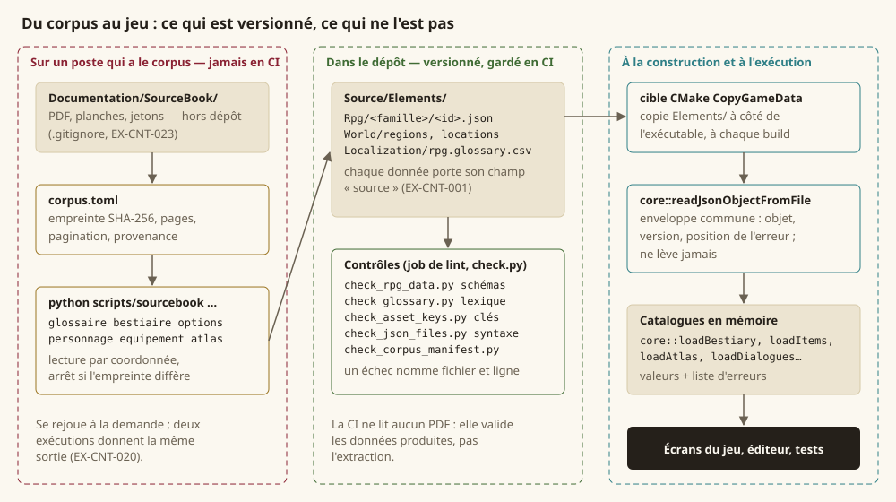
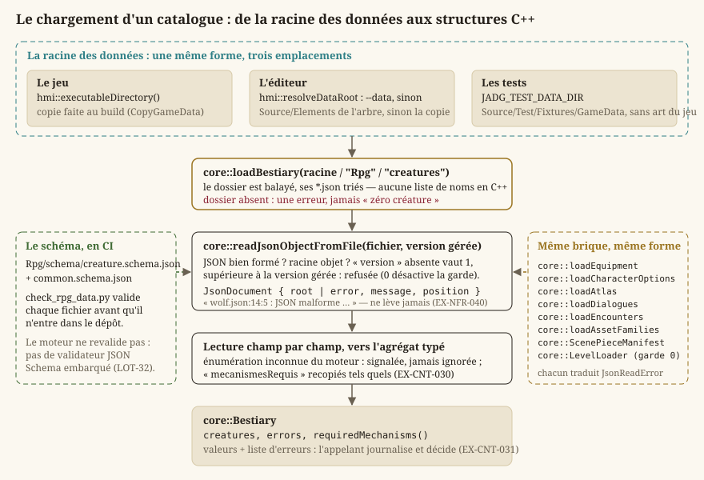
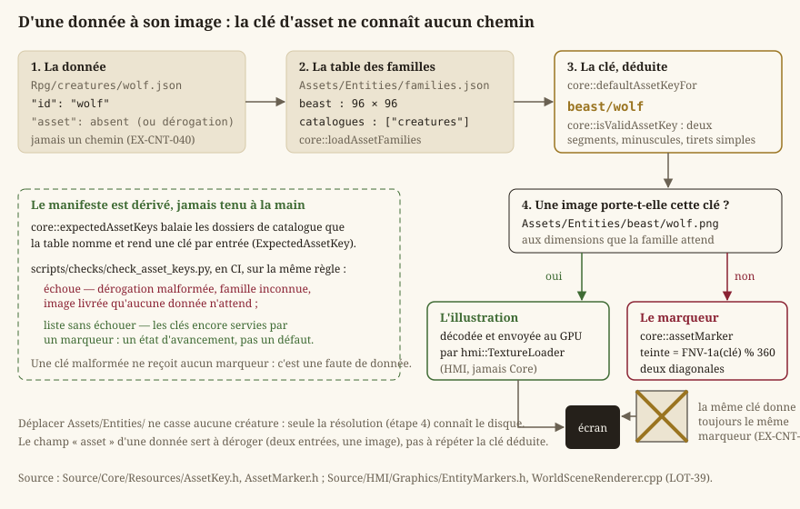
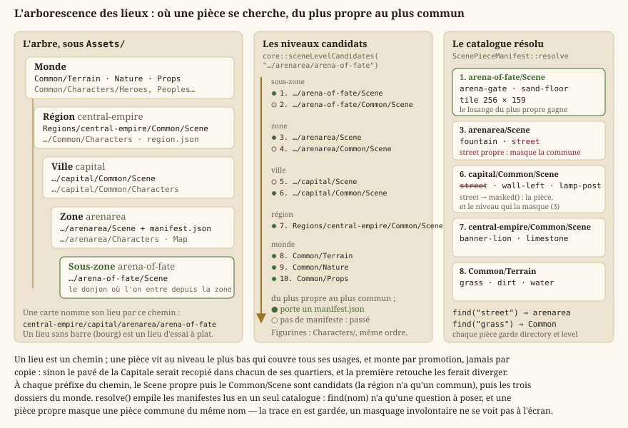
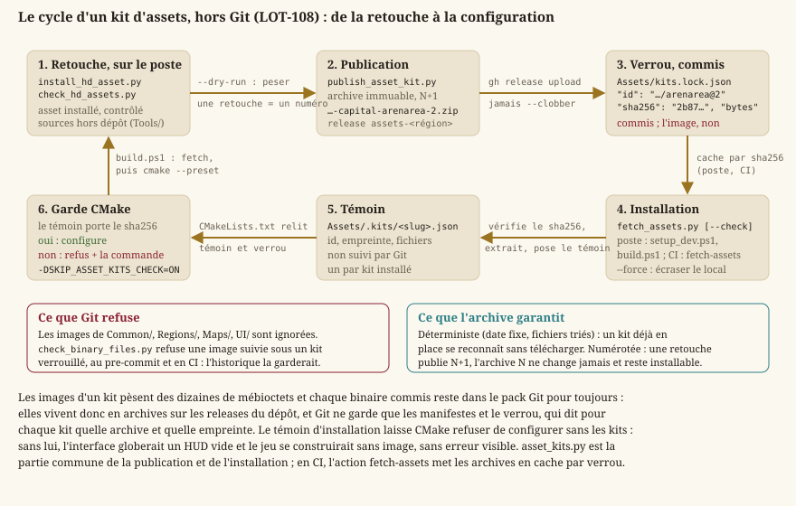
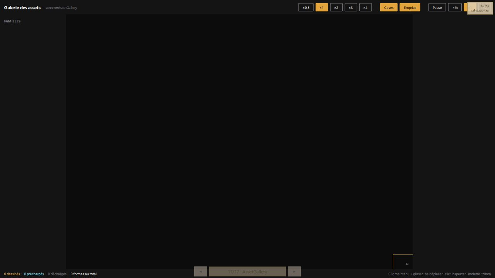
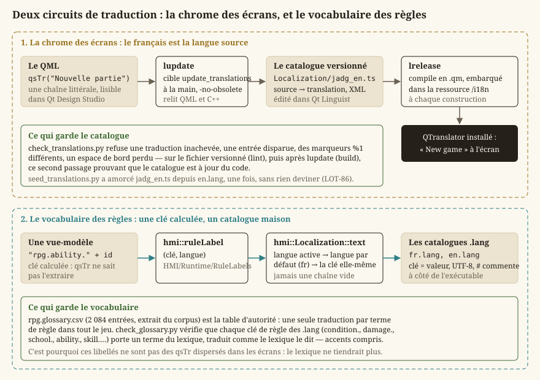

Données, corpus et ressources
Le jeu visé est un bac à sable dans un univers complet : treize régions, des dizaines d'espèces et de classes, des centaines de créatures. Aucune de ces valeurs ne vit dans du C++ — ni en constante, ni en switch, ni en table codée en dur (EX-VIS-007). Tout est donnée : des fichiers JSON sous Source/Elements/, produits depuis les livres du corpus par une chaîne d'extraction, validés par des schémas en intégration continue, et lus au démarrage par une brique de lecture unique. Cette page suit ce chemin de bout en bout : ce que sont ces données, d'où elles viennent, comment le moteur les charge, comment une donnée trouve son image, et comment un texte trouve sa langue.
Le périmètre est celui de Source/Core/Data/ (la brique de lecture), Source/Core/Resources/ (clés d'assets, marqueurs, manifeste des pièces, arborescence des lieux), Source/Elements/ (les données elles-mêmes, et le verrou des kits d'images qui n'y sont plus), scripts/sourcebook/ (l'extraction du corpus), les scripts scripts/check_*.py qui gardent les données, et Source/HMI/Localization/ (les textes). Ce que contiennent les catalogues — une créature, une arme, une règle — est l'affaire de Règles d20 et personnages et de Combat tactique ; ici, on parle de la filière qui les produit, les valide et les sert.
Définitions
Le lecteur connaît C++ ; il ne connaît pas forcément le vocabulaire d'un moteur de jeu piloté par les données. Six mots reviennent partout dans cette page.
- Un catalogue de données est un dossier de fichiers JSON, un fichier par entrée (
Rpg/creatures/wolf.json), lu en entier au démarrage et transformé en un agrégat C++ typé (core::Bestiary). Un catalogue ne porte pas de code : il déclare des valeurs, et le moteur les joue. Ce qu'il ne sait pas jouer, il le dit (EX-CNT-031) plutôt que de le taire. - Un schéma (JSON Schema) est le contrat d'une famille de données : quels champs, de quel type, dans quelles bornes, avec quelles énumérations fermées. Il vit dans
Rpg/schema/et se vérifie en intégration continue, pas à l'exécution (EX-CNT-010). - Une clé d'asset est la façon dont une donnée désigne son illustration :
beast/wolf, jamais un chemin de fichier (EX-CNT-040). La clé est stable ; l'endroit où vit l'image ne l'est pas. - Un manifeste est un fichier de format qui décrit ce qu'un dossier d'assets contient — la liste des pièces d'une planche, les cartes peintes et leur empreinte, les familles d'assets et leurs dimensions. Un manifeste porte un
version; une entrée de catalogue n'en porte pas. - La chaîne d'extraction est l'outil Python (
scripts/sourcebook/) qui lit les PDF du corpus — les livres de règles et de Tanares, hors dépôt — et écrit les catalogues. Elle est reproductible : deux exécutions donnent le même fichier (EX-CNT-020). - La localisation est la résolution d'un texte d'interface dans la langue du joueur. Le projet en a deux circuits : la chrome des écrans, traduite par Qt (
qsTr,.ts,.qm), et le vocabulaire des règles, résolu par clé dans un catalogue maison (.lang,hmi::Localization).
La règle : rien du corpus ne s'affiche, tout s'extrait en données
Le projet est privé et sans diffusion ; les licences du corpus ne contraignent pas l'usage de son vocabulaire ni de ses valeurs. Elles ne sont pas supprimées pour autant : elles sont endormies, et se réveilleraient le jour d'une publication. Deux disciplines gardent cette porte ouverte.
Chaque donnée dit d'où elle vient. Le champ source — srd, tanares, phb-fr ou original — est obligatoire au schéma (EX-CNT-001, EX-CNT-002). Le jour où la question « qu'est-ce qui devrait sauter ? » se pose, elle se répond par une requête sur ce champ, pas par une relecture de milliers de fichiers.
Aucune image du corpus n'entre dans le dépôt. Le plan de la capitale, la carte du monde, les planches des livres sont des œuvres : le jeu ne les affiche pas et ne les décalque pas (EX-IHM-076). Le LOT-94 a retiré les deux dernières images du corpus qui y étaient et a confié à check_ui_assets.py le soin de refuser toute provenance autre que produced ; les cartes de l'écran « Carte » sont peintes par l'auteur et gardées par check_map_assets.py. La chaîne d'extraction sait rendre une région de page en PNG (EX-CNT-022), mais cette capacité sert à regarder une référence sur un poste, jamais à produire un asset.


Le corpus lui-même (Documentation/SourceBook/, environ 280 Mo de PDF) et le texte intermédiaire que l'extraction en tire ne sont pas versionnés (EX-CNT-023) : le premier pèse trop pour un dépôt et se compresse mal, le second est un cache. Seules les données finales le sont, et ce sont elles que l'intégration continue valide. La CI ne lit aucun PDF ; check_glossary.py vérifie même que le .gitignore exclut bien le corpus, parce que cette exclusion avait vécu un temps comme modification locale non commise d'un seul poste.
Où vivent les données : Source/Elements/
Source/Elements/ est la racine de tout ce qui n'est pas du code. Chaque sous-dossier est copié à côté de l'exécutable à chaque construction par la cible CMake CopyGameData (déclarée dans Source/HMI/CMakeLists.txt), si bien que le jeu, l'éditeur et les tests retrouvent la même forme d'arborescence quel que soit l'endroit d'où ils lisent.
| Dossier | Contenu | Produit par |
|---|---|---|
Rpg/<famille>/<id>.json | les catalogues du jeu de rôle : creatures (94), items (125), weapons (37), armors (13), species (22), backgrounds (13), classes (4, provisoires), feats (42), skills (18), languages (16), rules (7), encounters, characters | la chaîne d'extraction (LOT-33, LOT-34, LOT-36, LOT-43) ; quelques fichiers original écrits à la main |
Rpg/schema/*.schema.json | 29 schémas, dont common.schema.json que tous réutilisent | à la main (LOT-32, puis chaque lot qui ajoute une famille) |
World/regions, World/locations | l'atlas : 13 régions, 107 lieux | sourcebook atlas (LOT-37) |
World/cities, World/dialogues, World/quests | les plans de ville, les graphes de dialogue et les quêtes (LOT-116) | à la main et par l'éditeur |
Levels/<région>/<ville>/<zone>.json | les cartes (format v4) | l'éditeur, et lui seul (Niveaux) |
Assets/ | images et polices : Common/, Regions/, Entities/, Maps/, UI/, Fonts/, chacun avec son manifeste. Git ne suit que les manifestes, les polices et Entities/ : les images de Common/, Regions/, Maps/ et UI/ viennent des kits d'assets publiés en archives, installés par scripts/fetch_assets.py d'après kits.lock.json (voir plus bas) | les ateliers, jamais à la main |
Maps/world-maps.json | les positions relevées sur les cartes peintes : ancre d'une région, cadre, lieux, quartiers | relevé par Ctrl+clic dans l'écran « Carte » (LOT-94) |
Localization/ | fr.lang, en.lang, jadg_en.ts, rpg.glossary.csv | à la main, Qt Linguist, sourcebook glossaire |
Editor/Templates/ | quatre modèles de carte vide (arena, blockout, interior, street) | LOT-EDITOR-08 |
Editor/Prefabs/<niveau>/<nom>.json | les préfabriqués de l'éditeur, rangés par niveau de l'arbre des lieux (central-empire/capital/, central-empire/capital/arenarea/…) : un préfabriqué sert à tout lieu qui descend du niveau qui le range (LOT-124) | l'éditeur, --save-prefab |
Credits/credits.json | l'écran des crédits | à la main |
Deux conventions traversent tous les catalogues. Les identifiants sont en anglais, en kebab-case ASCII (giant-eagle, saber-toothed-tiger), jamais renommés : c'est la clé par laquelle une donnée en désigne une autre, et une créature qui cite la langue elvish doit la trouver au catalogue des langues — check_rpg_data.py le vérifie. Les unités internes sont uniques : prix en pièces de cuivre, poids en grammes, entiers tous les deux ; la conversion se fait à l'extraction, et l'affichage reste une affaire de présentation.
La racine des données à l'exécution
Trois programmes lisent cette arborescence, et chacun la trouve différemment — c'est le premier point à connaître quand une donnée « n'est pas là ».
- Le jeu lit à côté de son exécutable (
hmi::executableDirectory()), donc la copie queCopyGameDatarefait à chaque build. Modifier un fichier de cette copie ne change rien au dépôt, et la construction suivante l'écrase. - L'éditeur fait foi pour les cartes :
hmi::resolveDataRoot(Source/Editor/Logic/DataRoot.h) prend la valeur de--datasi la ligne de commande en donne une, sinon leSource/Elementsde l'arbre des sources qui l'a construit, sinon la copie. L'arbre des sources est reconnu à la présence de son dossierLevels/, pas à son contenu — et comme Git ne garde pas un dossier vide, c'estLevels/README.mdqui tient ce dossier dans le dépôt (LOT-123). - Les tests lisent
Source/Test/Fixtures/GameData, exposé par la macroJADG_TEST_DATA_DIR(Source/Test/CMakeLists.txt). Cette racine a la forme deSource/Elements/mais sans un seul asset ni une seule carte du jeu : une place de ville, une caverne, un donjon, deux planches de lieu en aplats, une figurine par famille, une région, quelques dialogues. Les tests y prouvent des mécanismes — un manifeste se lit, une pièce se résout, un portail se traverse — qui doivent survivre à n'importe quel contenu du jour ; la table rase duLOT-102aurait sinon emporté ces tests avec l'art qu'elle retirait. L'éditeur a de mêmeSource/Test/Fixtures/EditorData, trois cartes et une planche synthétique, pour ses propres tests sur une base vide (LOT-123).
Attention — Une donnée qui manque dans la copie de construction ne se corrige pas dans la copie : elle se corrige dans
Source/Elements/, puis on reconstruit. Le seul outil qui écrit directement dansSource/Elements/est l'éditeur, pour les cartes et les clés de traduction qu'elles créent.
La brique de lecture : core::JsonDocument
Avant le LOT-79, le dépôt comptait six réimplémentations de « lire un fichier JSON » — catalogues d'animations, de sons, de palettes, chargeur de niveaux… — qui répétaient la même séquence (parser, vérifier que la racine est un objet, lire un champ de version absent valant 1, refuser une version supérieure) et redéfinissaient chacune ses catégories d'échec. Aucune ne disait où était l'erreur : nlohmann::json ne rapporte qu'un décalage en octets, et les six le jetaient. La filière données allait ajouter une quinzaine de lecteurs ; EX-CNT-012 exige qu'ils passent tous par une brique unique. C'est Source/Core/Data/JsonDocument.h.


Les types
core::JsonReadError porte les cinq catégories d'échec, une seule fois pour tout le dépôt : None, FileNotFound (fichier absent ou illisible), ParseError (JSON malformé, ou racine qui n'est pas un objet), UnsupportedVersion (numéro supérieur à ce que le lecteur sait lire) et MalformedStructure (champ absent, type incorrect). Chaque lecteur qui garde sa propre énumération publique la traduit depuis celle-ci par un switch exhaustif sans default : ajouter une catégorie d'un côté fait échouer la compilation plutôt que de tomber dans un cas par défaut.
core::TextPosition est une ligne et une colonne comptées à partir de 1, {0, 0} si inconnues. core::positionOf(texte, décalage) convertit le décalage d'octets de nlohmann en cette position, en comptant les retours à la ligne qui précèdent l'octet fautif. C'est la seule différence visible à l'usage entre avant et après le LOT-79, et elle est décisive : « JSON malformé » ne se corrige pas, « sounds.json:12:5 » si (EX-CNT-010).
core::JsonDocument est le résultat : l'arbre parsé root ou la description de l'échec (error, message, position), jamais les deux ; version est la version lue ; ok() dit si la lecture a abouti.
core::readJsonObject et core::readJsonObjectFromFile
readJsonObject(json, supportedVersion, origin, versionField) lit l'enveloppe commune d'un document depuis du texte déjà en mémoire :
- il parse en laissant l'exception de
nlohmannse produire à l'intérieur de la brique — le mode non lançant renverrait « document rejeté » sans dire où —, la capture pour en extraire la position, et n'en laisse aucune franchir la frontière (EX-NFR-040). Une seconde garde attrape un texte bien formé quenlohmannne sait pas représenter (1e400lèveout_of_range, sans position) : le fuzzing de nuit l'avait trouvé ; - il refuse une racine qui n'est pas un objet ;
- il lit le champ de version (
"version"par défaut ;versionFieldpermet un autre nom). Absent, il vaut 1 : un catalogue écrit avant que son format ne se versionne reste lisible sans réécrire les fichiers existants. Non entier, c'estMalformedStructure; - si
supportedVersion > 0et que la version lue lui est supérieure, c'estUnsupportedVersion: un fichier plus récent que le jeu contient par définition ce que le jeu ne sait pas interpréter, et le lire au mieux produirait un jeu silencieusement faux.supportedVersion = 0désactive la garde pour l'appelant qui porte la sienne avec sa propre catégorie d'échec — le chargeur de niveaux, dontcore::LevelValidationError::UnsupportedFormatVersionpréexistait.
origin est le nom à faire figurer dans les messages (« manifest.json ») ; le préfixe fichier:ligne:colonne : se réduit à ce qui est connu.
readJsonObjectFromFile(path, supportedVersion, versionField) lit d'abord le fichier, produit FileNotFound s'il est absent ou illisible, puis délègue à readJsonObject avec le nom du fichier pour origine. Un fichier absent n'est pas un document vide : c'est à l'appelant de décider qu'un catalogue absent est un état de départ légitime, et cette décision ne peut pas être prise dans la brique.
La brique expose l'arbre nlohmann::json à ses appelants ; la bibliothèque est donc une dépendance publique de Core. L'alternative — une façade typée par-dessus — aurait été un second modèle d'arbre à maintenir pour ne rien gagner d'observable. La lecture d'un catalogue reste malgré tout confinée aux .cpp des chargeurs : le reste du moteur ne voit que des agrégats typés.
Comment un chargeur s'en sert
Tous les chargeurs de catalogue ont la même forme, et core::loadBestiary (Source/Core/Rpg/Bestiary.cpp) en est le modèle :
- le dossier est balayé et ses
.jsontriés : une liste de quatre-vingt-quatorze noms écrite en C++ serait une seconde source de vérité, et la première créature ajoutée en sortirait invisible ; - un dossier absent produit une erreur, jamais « zéro créature » : les deux se ressemblent à l'exécution, et confondre « pas installé » avec « aucune entrée » fait chercher le défaut du mauvais côté pendant longtemps ;
- chaque fichier passe par
readJsonObjectFromFilesans garde de version (une entrée de catalogue n'est pas un document de format), et un échec de la brique s'ajoute tel quel à la liste d'erreurs — le message porte déjà le fichier et la ligne ; - la lecture champ par champ remplit l'agrégat ; une valeur d'énumération inconnue du moteur est signalée, jamais ignorée (
EX-CNT-011) ; lesmecanismesRequisdéclarés par la donnée sont recopiés tels quels ; - le résultat est valeurs plus liste d'erreurs (
core::Bestiary::errors,core::EquipmentCatalog::errors,core::Atlas::errors…), etrequiredMechanisms()rend l'union des mécanismes que les données exigent : c'est l'état d'avancement consultable qu'EX-CNT-031demande, pas une erreur fatale. L'appelant —hmi::EncounterModel,hmi::WorldMapModel,hmi::DialogueModel… — journalise les erreurs et décide.
Les chargeurs qui suivent cette forme : core::loadBestiary, core::loadEquipment, core::loadCharacterOptions, core::loadAtlas, core::loadDialogues, core::loadQuests, core::loadEncounters, core::loadAssetFamilies, core::ScenePieceManifest::loadFromFile, core::LevelLoader ; côté IHM, les catalogues d'animations et d'apparence. Le moteur ne revalide pas les schémas à l'exécution : embarquer un validateur JSON Schema coûterait une dépendance pour recontrôler ce qui l'a été avant d'entrer dans le dépôt (LOT-32). Ce que le chargeur vérifie, c'est ce que le schéma ne peut pas dire — une référence vers une autre entrée, une énumération du moteur.
Les schémas : le contrat avant les données
Le LOT-32 a livré les schémas alors qu'il n'existait aucune donnée à valider. L'ordre compte : un contrat écrit après coup se contente de décrire ce qui a été produit, y compris ses défauts. Chaque famille a son schéma (creature.schema.json, weapon.schema.json, region.schema.json…), déduit du nom de son dossier par check_rpg_data.py, et tous réutilisent common.schema.json, qui porte ce qu'une définition écrite deux fois ferait diverger :
| Définition | Ce qu'elle impose | Pourquoi |
|---|---|---|
id | kebab-case ASCII, 2 à 96 caractères | la clé par laquelle une donnée en désigne une autre ; 96 parce qu'un identifiant de lieu est composé (région + lieu, LOT-37) |
source | srd, tanares, phb-fr, original — requis | EX-CNT-001, EX-CNT-002 |
status | provisoire, raison, retraitSi — les trois requis ensemble | une donnée provisoire non marquée devient permanente par accident ; le critère de retrait s'écrit d'avance (EX-CNT-032) |
mecanismesRequis | liste d'identifiants, sans doublon | ce que la donnée exige du moteur (EX-CNT-030) |
assetKey | famille/identifiant, la même expression que core::isValidAssetKey | la donnée refusée à la validation est exactement celle que le moteur refuse |
damageType, condition, magicSchool | énumérations fermées : 13, 15 et 8 valeurs | tenues d'accord avec le C++ et le lexique (voir plus bas) |
| dés | expression régulière 1d8, 2d6+3, 4 | un 1d8 devenu ld8 à l'OCR est invisible à la relecture et fatal à l'exécution |
Trois choix de conception valent pour tous les schémas. additionalProperties: false partout : sans lui, weigthGrams au lieu de weightGrams passe sans un mot, et l'arme pèse zéro. Un schéma décompose, il ne calcule pas : la classe d'armure d'une armure est donnée en base, contribution de Dextérité et plafond, jamais en formule textuelle — une formule dans une donnée est du code déguisé. Le socle commun s'applique par allOf et le required de chaque famille ne le répète pas, sinon un champ manquant se signalait deux fois.
Le triangle moteur, contrat, lexique
Trois artefacts nomment les mêmes treize types de dégâts, quinze états et huit écoles : le moteur (core::DamageType, core::Condition, core::MagicSchool), le contrat (common.schema.json) et le lexique (rpg.glossary.csv). Rien ne les tient d'accord tout seuls, et une divergence est silencieuse : le JSON déclare psychique, le C++ ne connaît que Psychic, la valeur tombe dans le cas par défaut, et le sort cesse de faire des dégâts. Chaque arête est donc contrôlée une fois :
| Arête | Contrôlée par |
|---|---|
| moteur ↔ contrat | test_rpg_enums.cpp (ctest) lit le schéma livré et compare aux noms produits par le C++ |
| contrat ↔ lexique | check_rpg_data.py (CI) : les valeurs du schéma sont les termes anglais du lexique sous la catégorie correspondante |
| moteur ↔ lexique | aucun : par transitivité — un troisième contrôle serait bruyant, et le jour où deux échouent on ne saurait plus lequel dit vrai |
Les cardinaux 13, 15 et 8 sont en outre écrits dans un test : ils viennent des règles du jeu, pas du corpus, et le test de coïncidence resterait vert si les deux côtés perdaient la même valeur.
Les clés d'assets et les marqueurs : Source/Core/Resources/
Le LOT-39 a posé la plomberie qui fait tourner le jeu complet — trois cents entrées affichables — avant qu'une seule illustration ne soit produite. Deux en-têtes la portent, sans Qt ni GPU (EX-ARCH-001).


AssetKey.h : ce qu'une clé est, et d'où elle vient
core::AssetFamilyDefinition décrit une famille d'assets d'entité : son nom (beast, item, species…), les dimensions en pixels que ses images doivent avoir, et les dossiers de catalogue dont chaque entrée attend une illustration de cette famille. Ces définitions sont lues dans Assets/Entities/families.json, jamais énumérées en C++ : le vocabulaire grandira — sorts, PNJ, quartiers de guilde — et une énumération fermée obligerait chaque lot à recompiler pour ajouter une famille. Sept familles à ce jour : beast (96 × 96, jeton rond de table virtuelle), item, weapon, armor (48 × 48, icônes d'inventaire), species, background, class (128 × 128, portraits et emblèmes de la création de personnage). Compétences, langues et dons n'attendent aucune image et n'y figurent pas.
core::AssetFamilyTable est la table chargée — families et errors —, avec find(nom) et ok(). core::loadAssetFamilies(fichier) la lit par la brique commune avec une garde de version (la table est un document de format) ; une famille sans nom valide ou sans dimensions est refusée, parce qu'une famille muette rendrait le contrat de dimensions inopérant pour toute une famille sans que rien ne le signale ; un fichier sans aucune famille est une erreur.
core::isValidAssetKey(clé) dit si une chaîne respecte la syntaxe d'une clé : exactement deux segments séparés par /, chacun en minuscules, chiffres et tirets simples, ni en tête ni en queue. beast/wolf/token est refusé : un troisième segment serait un chemin qui ne dit pas son nom, et c'est précisément ce qu'EX-CNT-040 écarte. core::parseAssetKey décompose en core::AssetKey { family, id }, ou rend std::nullopt — jamais une clé devinée.
core::defaultAssetKeyFor(famille, id) rend la clé par défaut d'une entrée, famille/id, ou une chaîne vide si l'un des deux ne peut pas former un segment. C'est la règle qui évite trois cents lignes recopiées et la première faute de frappe qui donnerait une créature sans image sans que rien ne l'explique : une créature wolf.json attend beast/wolf sans rien écrire. Le champ asset d'une donnée sert à déroger — deux entrées qui partagent une illustration —, pas à répéter.
core::expectedAssetKeys(rpgDir, familles, erreurs) énumère les clés qu'attendent les catalogues : pour chaque famille, pour chaque dossier qu'elle nomme, pour chaque fichier, une core::ExpectedAssetKey — la clé, sa famille, le fichier qui l'attend et si la donnée a dérogé. Le manifeste est ainsi dérivé à chaque appel, jamais commis : un fichier tenu à la main divergerait du catalogue au premier ajout de créature, et c'est la copie oubliée qu'on lit six mois plus tard. Seules les clés orphelines entrent dans erreurs — une dérogation malformée, ou qui nomme une famille inconnue — parce qu'une clé sans image n'est pas un défaut mais un état d'avancement (EX-CNT-041).
AssetMarker.h : ce qui tient lieu d'image
core::MarkerColor est une couleur RVBA sur quatre octets ; core::MarkerImage ses pixels, width × height, ligne par ligne depuis le haut, avec isEmpty() et at(x, y). Aucune dépendance au rendu : HMI convertit en texture (le rendu du lieu, hmi::WorldSceneRenderer, pour une figurine sans image).
core::assetMarker(clé, largeur, hauteur) peint le marqueur d'une clé. Sans marqueur, trois cents entrées s'afficheraient comme des trous et la production graphique deviendrait un préalable bloquant ; avec, elle devient un remplacement progressif, une image à la fois, et le jeu ne cesse jamais d'être jouable. Trois propriétés sont voulues :
- déterministe : la même clé donne toujours le même marqueur. Un marqueur tiré au hasard changerait à chaque lancement, deux captures du même combat différeraient, et un test ne pourrait rien en dire. La teinte est
hachage(clé) % 360, à saturation et valeur fixes ; - manifestement un marqueur : deux diagonales barrent la vignette, d'épaisseur proportionnelle à sa taille (deux pixels se voient sur 48 et disparaissent sur 128), pour qu'on ne le prenne jamais pour une illustration définitive livrée un peu vite ;
- refusé à une clé malformée : l'image rendue est vide. Lui donner un marqueur la ferait passer pour une entrée en attente d'illustration, alors qu'elle est une faute de donnée que
expectedAssetKeyssignale.
core::stableAssetHash(clé) est le hachage FNV-1a 32 bits dont la teinte dérive. Il est écrit dans le projet plutôt qu'emprunté à std::hash, dont la valeur n'est pas garantie d'une plateforme ou d'une version de bibliothèque à l'autre : le marqueur d'un loup changerait de teinte au changement de compilateur — une régression invisible en développement et visible chez le joueur. Il est exposé pour être testé.
Note — Il n'y a pas de
ResourceManagerunique dansCore. Un gestionnaire de textures obligeraitCoreà connaître le GPU (EX-ARCH-010) ; la gestion des ressources vit du côté qui les possède — les textures dansHMI/Graphics(hmi::TextureLoader, les bibliothèques de textures des rendus de scène), les cartes dansCore/Levels.EX-ARCH-080a été amendée en conséquence, et leREADME.mddeSource/Core/Resources/le rappelle.
Où vit l'image, et qui la trouve
beast/wolf se sert dans Assets/Entities/beast/wolf.png, aux dimensions que la famille attend. Seule cette résolution — dans HMI — connaît le disque : déplacer le dossier ne casse aucune créature, il ne casse que l'endroit où on regarde. scripts/checks/check_asset_keys.py applique la même règle en CI (voir plus bas) et échoue aussi sur une image livrée qu'aucune donnée n'attend : elle ne serait jamais affichée.
Le manifeste des pièces d'un lieu : core::ScenePieceManifest
Une carte se dessine avec les pièces d'une planche de lieu — un sol, un mur, une façade —, et l'atelier des textures (LOT-92) écrit à côté des images de chaque lieu un manifest.json qui dit de chaque pièce sa classe, son emprise, son ancre, sa taille et son miroir. Jusqu'au LOT-EDITOR-02, seule la galerie des assets le lisait, dans HMI : aucune règle de carte ne pouvait s'appuyer sur l'emprise d'une pièce. La lecture est descendue dans Core (Source/Core/Resources/ScenePieceManifest.h) pour que le moteur en déduise l'occupation et la collision (LOT-EDITOR-12, core::deriveCollision) ; HMI n'en garde que les images.
Le manifeste nomme une pièce par une clé d'atelier (scene/martpart/wall-left) ; une carte ne connaît que le nom court (wall-left), celui que la table d'apparence et l'assignation de texture écrivent. Le lecteur rend les deux.
core::ScenePieceClass:Floor(un losange de sol),Tall(une pièce debout d'une case : mur, porte, torche),Wide(plusieurs cases : façade, étal, gradin),Other— une classe que ce lecteur ne connaît pas est gardée par son nom, jamais refusée.core::parseScenePieceClassfait la correspondance.core::PieceTactical: ce qu'une pièce oppose à qui passe, du plus faible au plus fort —Open(passe),Difficult(gêne),Cover(abri),Obstacle(arrête le pas : une fosse, on voit par-dessus),Solid(arrête la vue : un mur). Sur une case que plusieurs pièces couvrent, la plus forte l'emporte.DifficultetCoverne sont pas encore joués depuis une pièce ; l'éditeur le signale.core::pieceTacticalNameetcore::parsePieceTacticalfont la correspondance avec les noms du manifeste (open,difficult,cover,obstacle,solid), le second rendantstd::nulloptpour un nom inconnu.core::ScenePiece:name(court),key(atelier),file(relatif au dossier du lieu),pieceClassetclassName,footprintColumns/footprintRows(au moins 1 × 1, rendus parfootprint()),width/height(0 si non donnés),anchorX/anchorY(le sommet haut du losange de l'emprise, −1 si non donnés),mirrorOf(le nom court de la pièce dont celle-ci est le miroir, l'image miroir étant livrée telle quelle),tacticaletaliases(les anciens noms sous lesquels une carte peut encore la citer : une planche réextraite qui renomme une pièce ne casse aucune carte).core::ScenePieceManifest::loadFromStringetloadFromFilelisent par la brique commune avecFORMAT_VERSION = 1et rendent uncore::ScenePieceManifestResult— le manifeste, unecore::ScenePieceManifestError(les cinq catégories, traduites depuiscore::JsonReadError) et un message. Un manifeste sans objettexturesestMalformedStructure; une entrée sansfileest ignorée plutôt que fatale, pour que les autres pièces restent utilisables. Faute detactical, un sol passe et une pièce debout arrête la vue : c'est ce que valent les murs et façades que les planches livrent.place()rend le lieu (dispositiondu manifeste),pieces()les pièces dans l'ordre du fichier,find(nom)la pièce de ce nom court ou dont c'est un ancien nom — le nom courant l'emporte toujours sur un alias, pour qu'une pièce renommée puis remplacée par une nouvelle du même nom ne détourne pas les cartes qui citent la nouvelle.core::scenePieceShortNamerend ce qui suit la dernière barre d'une clé d'atelier.
L'arborescence des lieux : ScenePlace.h
Une carte ne nomme pas une planche : elle nomme un lieu, et un lieu est un chemin — central-empire/capital/arenarea, celui de son dossier sous Assets/Regions/. Le LOT-124 a posé cette règle parce que le volume l'impose : treize régions, une centaine de zones, des milliers de pièces. Si chaque zone livrait toutes ses pièces, le pavé de la Capitale serait copié dans chacun de ses quartiers, et la première retouche en ferait diverger dix exemplaires. L'arborescence des assets (arborescence-assets.md) tranche d'avance la question « cet asset, où va-t-il ? » : au niveau le plus bas qui couvre tous ses usages — le monde (Common/), la région (Regions/<région>/Common/), la ville (Regions/<région>/<ville>/Common/), la zone (Regions/<région>/<ville>/<zone>/), la sous-zone (un donjon où l'on entre depuis sa zone). Un asset naît propre et monte par promotion, jamais par copie ; et le moteur, lui, cherche une pièce du plus propre au plus commun. ScenePlace.h porte cette logique, pure : elle ne lit le disque que pour scenePlaces et resolveFigures.


core::sceneLevelCandidates(lieu) rend les niveaux candidats d'un lieu, du plus propre au plus commun, sous forme de core::SceneLevel : un libellé pour la palette (« Arena of Fate », « World »), le lieu que le niveau couvre (un préfixe du chemin, vide pour le monde) et son dossier de pièces, relatif à Assets/. À chaque préfixe du chemin, deux dossiers sont candidats — le Scene propre du préfixe, puis son Common/Scene — sauf pour la région, qui n'a qu'un commun : ses zones hors ville ont leur propre dossier. Le monde vient en dernier, en trois dossiers dans cet ordre : Common/Terrain, Common/Nature, Common/Props. Pour central-empire/capital/arenarea/arena-of-fate, la liste est donc :
| Niveau | Dossiers de pièces candidats, relatifs à Assets/, dans l'ordre |
|---|---|
| sous-zone | Regions/central-empire/capital/arenarea/arena-of-fate/Scene, puis …/arena-of-fate/Common/Scene |
| zone | Regions/central-empire/capital/arenarea/Scene, puis …/arenarea/Common/Scene |
| ville | Regions/central-empire/capital/Scene, puis Regions/central-empire/capital/Common/Scene |
| région | Regions/central-empire/Common/Scene |
| monde | Common/Terrain, Common/Nature, Common/Props |
C'est l'arbre qui dit ce qu'est chaque dossier, pas le code : seuls comptent les candidats qui portent un manifest.json. Un lieu sans barre (bourg) est un lieu d'essai à plat, sous Assets/Scene/<lieu>/ — la forme des racines d'essai (Source/Test/Fixtures/GameData), que l'arborescence livrée n'a plus ; core::isFlatScenePlace le reconnaît, et il remonte au monde comme les autres. core::isValidScenePlace refuse un lieu vide, un segment vide, ., .. et l'antislash ; core::scenePlaceLabel fait d'un segment un nom pour l'œil (arena-of-fate → « Arena of Fate »).
Trois fonctions disent la parenté d'un lieu. core::scenePlaceAncestry(lieu) rend ses préfixes, du plus propre au monde (a/b/c, a/b, a, puis la chaîne vide). core::scenePlaceDescendsFrom(lieu, ancêtre) dit si un lieu descend d'un autre — tout lieu descend du monde — et c'est la règle par laquelle un préfabriqué rangé sous central-empire/capital sert à tous les quartiers de la Capitale. core::scenePlaces(assets) énumère les lieux où une carte peut se poser, l'arbre de « New map » de l'éditeur : chaque dossier de Regions/ dont le Scene/ propre porte un manifeste (un Common/ n'est pas un lieu, et ce qu'il y a sous un Scene/ non plus), et chaque lieu d'essai à plat de Assets/Scene/. Enfin core::ownSceneDirectory(lieu) est le dossier propre d'un lieu, là où naît une pièce et où vit sa table d'apparence (Regions/<chemin>/Scene, ou Scene/<lieu> à plat), et core::fallbackScenePiecePath(lieu, pièce) vaut <dossier propre>/<pièce>.png : ce que le rendu essaie pour une pièce qu'aucun manifeste ne cite, faute de mieux.
Le catalogue résolu : core::ScenePieceManifest::resolve
Ceux qui lisent un manifeste — la déduction de collision, le brouillon, la palette, le contrôle — ne veulent poser qu'une question, find(nom). Ils ne parcourent donc pas les niveaux : core::ScenePieceManifest::resolve(assets, lieu) empile leurs manifestes, du plus propre au plus commun, en un seul catalogue. Un niveau sans manifeste est passé ; un manifeste qui ne se lit pas fait échouer la résolution, message préfixé de son dossier — une pièce qui disparaîtrait en silence d'un niveau commun ferait tomber la collision de toutes les cartes qui descendent de lui ; aucun manifeste du tout, c'est FileNotFound. Le losange (tile) est celui du niveau le plus propre qui en déclare un. Chaque pièce du catalogue garde son dossier d'origine (core::ScenePiece::directory, d'où path() tire le chemin de l'image) et son niveau ; levels() rend les niveaux dont un manifeste a été lu, pieces() les pièces niveau par niveau.
Une pièce propre qui porte le nom d'une pièce commune la masque : c'est ainsi qu'une zone remplace le pavé de sa ville par le sien sous la même clé, sans qu'aucune carte ne change (règle 2 de l'arborescence). Le catalogue en garde la trace — masked() rend des core::MaskedScenePiece, la pièce masquée telle que son niveau la déclare et le niveau qui la masque — parce qu'un masquage involontaire (deux ateliers qui ont nommé wall-left chacun de leur côté) ne se verrait sinon qu'à l'écran, sur les cartes d'un autre quartier. Côté éditeur, hmi::loadPlaceAssets passe par cette résolution, et hmi::PlaceAppearance::loadForPlace empile de même les tables d'apparence : pour un type de case, la table la plus propre qui le traduit l'emporte.
Les figurines : core::characterLevelCandidates et core::resolveFigures
Un PNJ se range de même (règle 5 de l'arborescence) : un PNJ nommé dans le Characters/ de sa zone, un archétype dans le Common/Characters/ de sa ville ou de sa région, un héros ou un peuple générique dans le Common/Characters/ du monde. core::characterLevelCandidates(lieu) rend ces niveaux, Regions/<préfixe>/Characters puis Regions/<préfixe>/Common/Characters à chaque préfixe du chemin (la région n'a que son commun), puis Common/Characters ; un lieu à plat ou vide n'a que le monde. Une carte nomme une figurine par son slug, relatif au dossier Characters/ qui la range (citizen, Heroes/brawler) : core::resolveFigures(assets, lieu) lit les listes npcs des manifestes de ces niveaux et rend une core::FigureDirectories, slug vers dossier, où le plus propre gagne — un PNJ de zone masque un archétype de même slug. Un manifeste absent ou illisible ne donne rien (EX-NFR-040) : la figurine se dessinera par son marqueur. core::figureDirectory(figures, figurine) fait le dernier pas : le dossier que la table donne ; à défaut la figurine elle-même si elle contient une barre (un dossier nommé depuis Assets/, Common/Characters/Heroes/brawler) ; à défaut Npc/<slug>, l'atelier à plat des racines d'essai.
Les autres manifestes de Source/Elements/
Chaque famille d'assets porte un manifeste, et « un dossier, un manifeste » est une règle de l'arborescence depuis le LOT-102 : un fichier qu'aucun manifeste ne cite fait échouer la CI.
| Manifeste | Ce qu'il déclare | Gardé par |
|---|---|---|
Assets/Entities/families.json | les familles d'entité, leurs dimensions, leurs catalogues | core::loadAssetFamilies, check_asset_keys.py |
Assets/<niveau>/Scene/manifest.json, Common/<famille>/manifest.json | les pièces d'une planche (textures), le lieu (disposition), la case de référence (tile) | core::ScenePieceManifest, la galerie |
Assets/Regions/<région>/region.json | l'identité d'une région : case, cadres de figure, palette, crédits | LOT-105 |
Assets/Maps/manifest.json | les cartes peintes par l'auteur : fichier, niveau (monde, région, ville), provenance author, taille 1920 × 1080, empreinte SHA-256 | check_map_assets.py |
Maps/world-maps.json | sur ces cartes, en fractions de la largeur et de la hauteur : l'ancre et le cadre de chaque région, ses lieux, ses quartiers | check_map_assets.py, hmi::WorldMapModel |
Assets/UI/illustrations.json | les illustrations d'interface produites : clé du cahier, prompt, date, empreinte | check_ui_assets.py |
scripts/sourcebook/corpus.toml | les documents du corpus (voir plus bas) | check_corpus_manifest.py |
Le Assets/README.md dit où un asset va : au niveau le plus bas qui couvre tous ses usages — Common/ pour ce qui existe partout, Regions/<région>/Common/ pour l'identité d'une région, Regions/<région>/<ville>/<zone>/ pour ce qu'on ne voit que là. Un asset naît propre et monte par promotion, jamais copié ; le moteur résout une clé du plus propre au plus commun. Les sources — masters, planches de référence — vivent hors dépôt (Tools/AssetsHD/) ; seul l'asset installé entre.
La chaîne de production HD : scripts/assetsGeneration/
Entre la sortie du générateur d'images et l'asset installé, rien ne se fait à la main : cinq scripts, hors CI, tiennent la chaîne, et chacun dit dans son en-tête ce qu'il fabrique et pourquoi.
install_hd_asset.py(LOT-104) installe un lot de sources. À côté des sorties du générateur, un descripteurinstall.jsondit, pour chaque source, ce qu'elle devient —target(un dossierScene/ouCharacters/sousAssets/), le nom, la famille, l'emprise, le type tactique, ou les noms d'une planche qui porte plusieurs sols. Le script détoure (le voile d'alpha du générateur tombe à 0, l'intérieur monte à 255), découpe, réduit (jamais agrandit) à l'échelle du standard, ancre — une dalle devient exactement le losange du lieu, une pièce debout se mesure à ses deux pointes — et inscrit l'image et son entrée dans lemanifest.jsondu dossier cible, sans toucher aux autres entrées. La règlefoldersdu descripteur (LOT-129) range un kit volumineux en sous-dossiers sous sonScene/: la première règle dont le motifmatchprend le nom de la pièce donne son sous-dossierfolder(roofs/l/d3/), le manifeste cite alors la pièce par ce chemin, et la clé ne change pas. Les personnages ne passent plus par lui (LOT-1008) : un descripteur dont la cible est unCharacters/est refusé, leur fiche s'écrit et s'installe par l'atelier des assets de l'éditeur — la fenêtre Asset workshop, ouLevelEditor --apply <fiche d'atelier>(guide de l'éditeur). Un personnage sans modèle n'existe plus : le portrait d'attente duLOT-145(la listeportraitsdu manifeste) part avec leLOT-1011,check_hd_assets.pyrefuse la clé et tout nom cité parnpcsa sa fiche et son modèle.prepare_envois_scene.py(LOT-105) prépare les envois au générateur, qui reste un outil manuel : depuis la commande d'une zone (Tools/AssetsHD/…/commande.md, la source unique des textes), un dossierenvois/NN-<nom>/par envoi, avec le texte entier à coller, les pièces jointes déjà produites et unLIRE.txtqui dit ce qu'il reste à joindre et sous quel nom enregistrer la sortie.--seulementne prépare qu'une reprise,--suffixeévite d'écraser une source acceptée. Il ne sert plus qu'aux images tolérées du standard 3D ; son pendant pour les figurines (LOT-112) et l'aperçu de marche ont été retirés auLOT-1001: un personnage ne se commande plus en bandes peintes.rig_character.py(LOT-1005) lie un maillage reçu de Meshy au squelette humanoïde commun, d'après sa fiche de liaison, pose les six clips et écrit le.glbautonome etskeleton.json;check_character_model.pycontrôle l'export (structure, poids, contact au sol, glissement du pied) etrender_character_review.pyrend les planches que l'auteur juge. L'atelier des assets de l'éditeur pose ensuite le modèle, sa fichecharacter.json, son portrait, son jeton et le squelette (LOT-1008).retouch_character.py(LOT-1008, décision D-44) fait l'aller-retour par Blender d'un personnage lié :openouvre le modèle dans Blender — maillage, 53 os, une action par clip, à 60 images par seconde — et prend un repère de ce que Blender a lu ;importrelit le.blendenregistré, ne retient que ce qui diffère du repère — une articulation déplacée dans la fiche de liaison, un clip modifié dans la fiche de retoucheretouche.json— puis, avec--sourceet--output, relie le modèle parrig_character.py --retouchet le contrôle. Blender n'est que l'instrument de saisie : rien n'en revient qu'en données, ni maillage, ni poids, ni.glbexporté par lui.build_hd_mockup.py(LOT-101) monte la maquette de validation du standard 2D HD, huit cases sur huit à 1080p et 2160p, et écrit sousSource/Test/Fixtures/HdMockup/la même scène en données d'essai du moteur ;--checkvérifie que tout est à jour.
Ce que ces scripts installent est gardé en CI par check_hd_assets.py, qui n'a pas besoin des sources (voir les kits, ci-dessous). check_orphans.py (LOT-1001) étend la règle à tout Source/Elements/Assets/ — images, maillages, manifestes, polices : pas un fichier qu'aucun manifeste ne cite, pas une entrée sans fichier — et aux scripts eux-mêmes, dont aucun ne reste sans appelant. Un lot qui remplace un asset le supprime dans sa PR.
Les kits d'assets, hors Git
Depuis le LOT-108, les images de Assets/Common/, Assets/Regions/, Assets/Maps/ et Assets/UI/ ne sont plus suivies par Git — .gitignore les exclut, extension par extension. Git ne garde que les manifestes et un verrou, kits.lock.json ; Fonts/ et Entities/ restent suivis. La raison est le poids et l'historique : une pièce HD pèse seize fois une pièce de l'ancienne planche, le kit commun de la Capitale fait à lui seul une centaine de mébioctets pour 1 734 fichiers, et tout binaire commis reste dans le pack Git pour toujours, même supprimé ensuite (check_binary_files.py refuse déjà tout fichier de plus de 5 Mio pour cette raison). Chaque retouche d'un kit aurait fait grossir le clone de chaque poste et de chaque runner.
Un kit est un dossier d'assets publié d'un seul tenant : un lieu de Regions/ ou de Common/ (sans ses sous-lieux, qui sont d'autres kits), Maps/ ou UI/. Ses images partent en archive immuable sur une release GitHub du dépôt — une release par région (assets-central-empire), une pour le commun du monde, une pour les cartes, une pour l'interface. Le verrou porte, par kit, un identifiant numéroté (Regions/central-empire/capital/arenarea@1), son path, la release et l'asset qui le portent (regions-central-empire-capital-arenarea-1.zip), son empreinte sha256, son poids et son nombre de fichiers. L'archive est déterministe — date fixe des entrées, fichiers triés —, si bien que deux publications du même contenu ont la même empreinte, et qu'un kit déjà en place se reconnaît en reconstruisant son archive depuis le disque, sans rien télécharger.


Le cycle tient en six scripts et une garde :
| Étape | Outil | Ce qu'il fait |
|---|---|---|
| retouche | install_hd_asset.py, check_hd_assets.py | l'asset s'installe et se contrôle sur le poste, comme avant |
| publication | publish_asset_kit.py | contrôle le kit avec le contrôle de son arbre (check_hd_assets.py, check_map_assets.py ou check_ui_assets.py), construit l'archive, et si l'empreinte n'est pas celle du verrou prend le numéro suivant — une retouche est un nouveau numéro, jamais une archive remplacée (gh release upload, jamais --clobber) ; --dry-run archive et pèse sans publier |
| verrou | le même script | met à jour kits.lock.json et le témoin du poste ; le verrou se commet, les images non |
| installation | fetch_assets.py | pour chaque kit du verrou : déjà en place, rien ; sinon l'archive vient du cache du poste (%LOCALAPPDATA%\JadgAssets, ou JADG_ASSETS_CACHE, partagé par les clones et les worktrees), téléchargée au besoin, vérifiée contre l'empreinte, extraite. --check vérifie sans télécharger, code non nul sur un écart ; le travail local n'est jamais écrasé — une image modifiée ou ajoutée à la main arrête l'installation, sauf --force |
| témoin | fetch_assets.py | chaque kit installé laisse Assets/.kits/<slug>.json (non suivi) : l'identifiant, l'empreinte, les fichiers |
| garde | CMakeLists.txt | à la configuration, compare le témoin de chaque kit du verrou à son empreinte et refuse de configurer sur un écart, avec la commande à lancer ; -DSKIP_ASSET_KITS_CHECK=ON outrepasse |
| CI | fetch-assets | l'action composite qu'appellent les jobs qui lisent les assets : cache d'Actions indexé par l'empreinte du verrou, fetch_assets.py puis fetch_assets.py --check |
asset_kits.py est la partie commune de la publication et de l'installation — ce qu'est le fichier d'un kit, l'archive déterministe, le verrou, les témoins, le cache — sans dépendance hors de la bibliothèque standard. Sur le poste, scripts/setup_dev.ps1 et scripts/build.ps1 appellent fetch_assets.py avant CMake ; sans les kits, Source/Ui globerait un HUD vide et le jeu se construirait sans image, sans erreur visible — d'où la garde, qui refuse avec la commande plutôt que de télécharger en silence à la configuration. check_binary_files.py ferme la boucle du côté de Git : une image suivie sous un dossier que le verrou cite est refusée, avant le commit et en CI, parce que la suivre à nouveau la remettrait dans l'historique. Une retouche se publie, elle ne se commet pas.
Attention — Une carte sans texture dans l'éditeur, un HUD vide, une galerie qui ne montre que des marqueurs : c'est un kit absent, pas un bug de rendu.
python scripts/fetch_assets.py --checkdit lequel.
La galerie des assets
Tout asset graphique livré doit paraître dans la galerie des assets, l'écran de débug --screen=AssetGallery (EX-CNT-042) : un modèle ajouté y montre toutes ses formes et toutes ses animations, disposées dans leur emprise, sans rien câbler d'autre que ses fichiers et son manifeste. Vérifier un asset dans une scène de jeu ne montre que ce que la scène utilise, dans la pose où elle l'utilise ; à mesure que les ateliers produisent, c'est la galerie qui dit ce qui existe.


Les images qui ne sont pas des assets à montrer en sont exclues par une règle nommée dans le code, hmi::assetGalleryExcludes : l'interface (UI/), les cartes plein écran de l'écran « Carte » (Maps/) et les polices (Fonts/). hmi::assetGalleryUnlisted rend toute autre image que la galerie ne montre pas, et un test bloquant échoue si cette liste n'est pas vide. Une famille nouvelle, que la galerie ne sait pas encore lire, s'y ajoute dans le même changement que ses premiers fichiers.
La chaîne d'extraction du corpus : scripts/sourcebook/
Les données viennent de PDF — huit livres et neuf ressources de table virtuelle, environ 1 200 pages — par une chaîne outillée qui n'est pas un script jetable : elle se rejoue à chaque correction du corpus. Rien de tout cela ne tourne en CI, où les PDF ne sont pas et ne seront pas (EX-CNT-023). Elle se lance par py -3.13 scripts/sourcebook <commande> sur un poste qui a le corpus, et dépend de PyMuPDF — la seule bibliothèque qui donne accès aux coordonnées de mots dont tout le reste dépend.
corpus.toml et corpus.py : le manifeste du corpus
corpus.toml est versionné à côté de l'outil, et non à côté des documents qu'il décrit, puisque ceux-ci ne le sont pas. Il porte, par document, quatre choses qui répondent chacune à une panne observée : sha256, parce que remplacer un PDF par une autre édition décale toutes les pages sans qu'aucun message ne le dise ; pages, second garde-fou lisible par un humain ; pagination (simple, double, aucune) et decalage, parce que les deux livres Tanares sont paginés en double page — une page PDF en porte deux côte à côte, et un sommaire qui annonce « p. 100 » désigne la page PDF 50 ; provenance (srd, tanares, phb-fr), reportée telle quelle dans le champ source de chaque donnée produite. Depuis les ressources de table virtuelle, type distingue un pdf, une image seule et une collection — un dossier de fichiers de même nature, dont l'empreinte porte sur la liste triée « nom:empreinte » de ses membres plutôt que sur un fichier.
corpus.py lit ce manifeste et ne connaît rien du contenu des PDF. Document est une entrée : verifier() lève CorpusError si le document est absent, si une collection n'a pas le compte de fichiers annoncé, ou si l'empreinte réelle (empreinte_reelle(), calculée par blocs) diffère. L'erreur est toujours fatale, jamais rattrapée : la rattraper reviendrait à produire les données décalées qu'EX-CNT-020 interdit. index_pdf(page_imprimee) et pages_imprimees(index) font la correspondance dans les deux sens, en tenant compte de la double page. Corpus.charger() lit le TOML (bibliothèque standard, tomllib), vérifie sa version et chaque champ requis ; corpus[cle] rend un document ou nomme ceux qui existent.
extraction.py : lire une page
Extracteur(document) ouvre un PDF après en avoir vérifié l'empreinte — un extracteur construit est un extracteur dont on sait qu'il lit le bon document — et refuse un document qui n'est pas un PDF. Trois constats du corpus y sont câblés, et non laissés à la discipline de l'appelant :
texte(index, moitie, region, tri)rend le texte d'une page, d'une moitié ou d'une région en ordre de lecture. Il convient au corps de texte, jamais à un tableau.tri=Falsegarde l'ordre du document, ce qu'il faut sur une page à deux colonnes où le tri par ordonnée entrelacerait les colonnes.tableau(index, moitie, region, ecart_colonne, bornes)extrait un tableau par regroupement des mots selon leur coordonnée (EX-CNT-021) : les lignes par chevauchement vertical des boîtes de mots, les colonnes par profil de projection horizontale sur toute la région — ce qui empêche une ligne courte de redéfinir les colonnes pour elle seule, la panne exacte du mode en flux, qui sur la table des armes attribue le poids et le prix à l'arme de la ligne suivante. Une cellule vide reste vide.bornesimpose les séparations pour le seul cas que la projection ne tranche pas : deux colonnes qui se touchent parce que l'entrée la plus longue de l'une mord sur l'autre.mots()rend les mots avec leurs coordonnées.lignes(index, moitie, region)rend les lignes avec leur typographie —Ligneet sesFragment(texte, police, corps, abscisses,gras). C'est le grain sur lequel repose toute l'extraction des blocs de statistiques : un titre en gras y est une donnée, et le mode texte perd des espaces que le fragment conserve (Vueaiguisée). Une ligne dessinée deux fois au même point n'est rendue qu'une fois : le Player's Guide compose ses titres en double, remplissage et trait.image(index, region, moitie, ppp)rend une région en PNG par rendu (EX-CNT-022), jamais par extraction du flux brut, qui produit sur ce corpus des zones de bruit vert et cyan. Le rendu embarque tout ce qui est dessiné, texte compris :regions_candidates()propose donc les emplacements des objets image en signalant ceux qui recouvrent du texte, et l'humain recadre.rectangle()calcule la zone de travail (page, moitié d'une double page, région), et refuse une moitié sur un document qui n'est pas en double page ;statistiques()compte pages, caractères et images pour l'inventaire.
Le cache disque (--cache) est indexé par l'empreinte du document : il ne peut pas servir une réponse issue d'une autre édition, et deux exécutions donnent la même sortie avec ou sans lui.
mise_en_page.py et catalogues.py : ce que les modules partagent
mise_en_page.py porte la grille à deux colonnes des documents aidedd, mesurée une seule fois : la gouttière [287, 309] points, l'interligne qui sépare deux paragraphes (11,2 pt à l'intérieur, 15,2 pt et plus entre deux, sans valeur intermédiaire sur 1 258 intervalles), et le regroupement en paragraphes. verifier_gouttiere() recontrôle page par page que le blanc central est bien blanc : le jour où une édition le déplace, la coupe échoue au lieu de produire des blocs où une moitié de paragraphe appartient au voisin. bande_blanche() et colonnes_de_page() mesurent la gouttière quand elle bouge — le Manuel des Joueurs est un scan — et rendent une seule colonne quand il n'y en a pas.
catalogues.py relit les catalogues déjà livrés pour que le lot suivant s'y raccroche : depuis le mot français du livre, retrouver l'identifiant anglais du catalogue. identifiant(nom) fait le kebab-case ASCII ; catalogue_francais() indexe un dossier par toutes ses graphies (« Tromperie / Supercherie ») ; index_avec_lexique() empile le catalogue (qui fait foi), puis le lexique, puis les alias du livre tranchés au LOT-43 (« elfe » pour « elfique »), sans qu'une source plus tardive ne remplace une plus ancienne. Deux modules qui referaient ce rapprochement chacun de leur côté n'en couvriraient pas les mêmes cas, et la divergence ne se verrait que par une chouette géante muette en elfique.
glossaire.py : la table d'autorité
Le lexique bilingue est la première sortie de la chaîne, parce qu'il en est le gisement le plus simple — texte natif, deux colonnes, une entrée par ligne — et qu'un outil qui n'a rien extrait est un outil dont on ne sait rien. Il produit rpg.glossary.csv : 2 084 entrées anglais;français;catégorie. Ce n'est pas une traduction d'interface, c'est une table d'autorité — une seule traduction par terme de règle dans tout le jeu, sans quoi saving throw devient « jet de sauvegarde » dans la fiche, « JdS » dans le journal et « sauvegarde » dans l'infobulle.
lignes_utiles() retire l'habillage et lit les deux colonnes dans l'ordre ; assembler_entrees() recolle les 153 lignes de continuation (une ligne sans = prolonge la précédente) ; decouper() lit anglais = français ; catégorie ; construire() ajoute les compléments attestés des Basic Rules — les huit écoles de magie nues, exhaustion comme quinzième état, la propriété special —, chacun déclarant la page où il est attesté et vérifié sur cette page avant d'être écrit ; ecrire_csv() rend une chaîne comparable, ce qui permet à glossaire --verifier d'échouer si le fichier versionné n'est plus ce que le corpus produit. La clé d'unicité est le couple (anglais, catégorie) : light vaut « légère » comme propriété d'arme et « Lumière » comme sort, et dédupliquer sur l'anglais seul en écrasait un des deux en silence.
Les modules de catalogue
Chaque module produit une famille, choisit sa source pour une raison écrite dans son en-tête, et porte ses propres contrôles qui arrêtent la génération : une extraction incomplète ne livre jamais un catalogue amputé, parce qu'un catalogue de 93 créatures se charge, se valide et se joue exactement comme un de 94.
| Module | Commande | Source | Sortie | Ce qui arrête la génération |
|---|---|---|---|---|
bestiaire.py (LOT-33) | sourcebook bestiaire | Animaux.pdf | 94 créatures | le sommaire (94 noms) et le corps (94 titres) doivent coïncider nom pour nom ; gouttière re-vérifiée ; six caractéristiques et sept étiquettes exigées |
equipement.py (LOT-34) | sourcebook equipement | Basic Rules | 37 armes, 13 armures, 125 objets | le nombre de rangées tiré de chaque table déclarée ; un tiret vaut absent, jamais zéro |
personnage.py (LOT-36) | sourcebook personnage | Basic Rules, Manuel des Joueurs, Player's Guide | 22 espèces, 13 historiques, 4 classes provisoires | une augmentation présente des deux côtés et différente ; une espèce sans taille ni vitesse est écartée et dite |
options.py (LOT-43) | sourcebook options | Basic Rules, Manuel des Joueurs, lexique | 18 compétences, 16 langues, 42 dons, multiclassage, difficulté, expérience | cardinal de chaque catalogue ; une divergence de la table d'emplacements qui ne serait pas un 1 effacé par l'OCR |
atlas.py (LOT-37) | sourcebook atlas | Tanares Sourcebook, ch. 5 | 13 régions, leurs lieux | voisinage symétrique, tout voisin existe, graphe connexe (EX-CNT-062) ; cardinal de lieux par région |
Trois idées reviennent d'un module à l'autre. La typographie porte la structure : le bestiaire reconnaît un nom de créature à sa police et son corps, un trait à son premier fragment gras, un paragraphe d'ambiance à une autre police — sept discriminants mesurés sur trente pages, jamais une intuition. Un scan se lit par recoupement, pas par relecture : l'OCR du Manuel des Joueurs efface les cellules valant 1, et la table du multiclassage est prise sur la progression du magicien des Basic Rules puis confrontée cellule à cellule ; les augmentations raciales sont lues dans le bloc et dans la table de la page 12, et doivent coïncider. Ce que le schéma ne peut pas dire n'est ni jeté ni élargi en silence : une résistance conditionnelle reste dans un trait et la créature déclare le mécanisme resistance-conditionnelle ; une augmentation « au choix » déclare augmentation-de-caracteristique-au-choix ; le moteur les liste au chargement (EX-CNT-030, EX-CNT-031). Les alias d'un livre (« Sangdragon » pour « drakéide », « Sorcier » pour l'occultiste) sont déclarés dans une table avec leur raison, parce que le lexique est généré et qu'une correction à la main y serait effacée.
La ligne de commande
__main__.py expose info (les documents et leur pagination), verifier (les empreintes ; --regenerer affiche celles à reporter au manifeste), stats, texte, tableau, image, regions, puis les commandes de production glossaire, options, bestiaire, personnage, equipement, atlas. Toute commande commence par vérifier l'empreinte, et ce n'est pas contournable. Une page se désigne par --page (index PDF) ou --page-imprimee ; --moitie gauche|droite découpe une double page ; --region x0,y0,x1,y1 cible une zone en points PDF. Les commandes de production impriment leurs signalements — ce que le livre dit et que le catalogue ne sait pas porter, une case que le livre laisse vide, les cellules rétablies par recoupement — parce que les taire reviendrait à choisir à la place du lecteur.
Les contrôles en CI
La CI ne lit aucun PDF : elle valide les données produites, pas l'extraction. Chaque contrôle est un script Python sans dépendance ou presque, appelé par le job de lint (uv run scripts/check.py les rejoue tous en local, voir CONTRIBUTING.md). Plusieurs s'auto-testent avant de se prononcer : un contrôle sans entrée est vert par vacuité, et personne ne sait s'il fonctionne — c'est la panne du LOT-78, où une règle de lint contenait un caractère invisible qui l'empêchait de jamais correspondre.
| Script | Ce qu'il vérifie | Échoue sur | Liste sans échouer |
|---|---|---|---|
check_rpg_data.py | les schémas eux-mêmes sont valides (un schéma mal formé accepte tout) ; chaque fichier de Rpg/ et World/ respecte le schéma de son dossier ; les énumérations fermées coïncident avec le lexique ; toute langue citée existe ; l'atlas est connexe et symétrique ; chaque quartier d'une ville mène quelque part ; auto-test sur scripts/fixtures/rpg/ (3 fixtures valides, 10 invalides) | une violation, avec fichier et ligne — la ligne est retrouvée en cherchant les clés du chemin d'erreur dans le texte brut | les données provisoires, groupées par motif (EX-CNT-032) |
check_asset_keys.py | les clés d'entité, par la même expression que common.schema.json et core::isValidAssetKey ; les figurines de monstres (Assets/Monsters/, bandes et .anim.json aux dimensions du gabarit) | une clé orpheline ; une image livrée qu'aucune donnée n'attend | les clés encore servies par un marqueur (EX-CNT-041) |
check_json_files.py | tout .json suivi : JSON valide, pas de clé en double (la seconde écrase la première en silence), pas de BOM, retour à la ligne final ; aussi en hook pre-commit | l'un de ces défauts ; deux fixtures volontairement invalides sont nommées | — |
check_corpus_manifest.py | corpus.toml est bien formé et son contrôle d'empreinte fonctionne, sur un corpus fictif écrit dans un dossier temporaire (collection comprise) | un champ manquant, une pagination inconnue, un type mal orthographié | — |
check_glossary.py | le corpus est exclu du dépôt ; le lexique est bien formé (aucun doublon de couple, ensembles fermés au complet : 8, 15, 13) ; chaque clé de règle des .lang (condition., damage., school., weapon_property., ability., skill.…) porte un terme du lexique traduit comme il le dit — casse ignorée, accents significatifs ; auto-test sur six catalogues fictifs | une divergence | — |
check_map_assets.py | Assets/Maps/manifest.json : provenance author, 1920 × 1080, empreinte et taille exactes, aucune image hors manifeste ; world-maps.json cite des images, régions et lieux qui existent | tout écart ; --write réécrit tailles et empreintes | — |
check_ui_assets.py | Assets/UI/illustrations.json : provenance produced uniquement, empreinte, dimensions, aucune image orpheline, tout nom de fichier cité par le QML est déclaré, toute pièce du cahier est livrée ou déclarée pending, la table d'Artwork.qml suit le manifeste | tout écart, dont une image du corpus revenue dans le dépôt | — |
check_translations.py | jadg_en.ts (voir la localisation) | une traduction inachevée, une entrée disparue, des marqueurs %1 différents, un espace de bord perdu | — |
check_hd_assets.py | sous Common/ et Regions/, chaque Scene/ et Characters/ porte un manifeste qui cite exactement ses images ; chaque pièce est au standard (PNG 32 bits, taille déclarée, 4096 px au plus, dalle au losange du lieu, ancre dans l'image) ; le poids de chaque zone s'affiche (sans budget) | un fichier cité absent, une image que le manifeste ne cite pas, une pièce hors bornes | le poids par zone |
check_binary_files.py | aucun fichier de plus de 5 Mio ; tout binaire porte une extension déclarée binary dans .gitattributes ; aucune image suivie sous un kit verrouillé (LOT-108) ; aussi en hook pre-commit | l'un de ces défauts | — |
À ces contrôles s'ajoutent, côté C++, test_rpg_enums.cpp (le triangle) et les tests de chargeurs qui rejouent des profils recopiés à la main du PDF contre le catalogue livré — jamais une fixture, dont une copie cesse de prouver quoi que ce soit le jour où la génération change.
La localisation
Le jeu a deux circuits de traduction, et il faut savoir lequel sert un texte donné pour trouver où le corriger.


La chrome des écrans : qsTr, lupdate, .ts, .qm
Les écrans du jeu (Qt Quick) écrivent leurs textes en français dans le fichier QML — qsTr("Nouvelle partie") — plutôt que par une clé : c'est ce qui permet à la conception de juger une mise en page dans Qt Design Studio, où une clé technique ne se lit pas. Le français est donc la langue source et n'a pas de catalogue ; sans traducteur installé, qsTr rend sa source.
La cible CMake update_translations, lancée à la main (et non à chaque construction, parce que voir le fichier bouger sous soi rend toute relecture pénible), fait relire par lupdate les trois cibles qui portent du texte — les formulaires, les jumeaux de câblage et les vues-modèles — et met à jour jadg_en.ts, le catalogue anglais versionné (248 messages), avec -no-obsolete : une chaîne retirée du code quitte le catalogue au lieu d'y rester en vanished, où elle ferait croire le catalogue plus complet qu'il n'est. lrelease compile ce .ts en .qm, embarqué dans la ressource /i18n à chaque construction, et le jeu installe le QTranslator. LinguistTools est optionnel : absent, le jeu se construit et parle français, et le message de configuration dit pourquoi.
check_translations.py garde ce catalogue à deux moments : sur le fichier versionné dans le job de lint, et après lupdate dans le job de construction — ce second passage prouve que le catalogue est à jour du code, puisqu'une chaîne nouvelle y apparaîtrait inachevée. seed_translations.py a servi une fois, au LOT-86, à amorcer jadg_en.ts depuis en.lang : pour chaque source française, il cherchait la clé dont fr.lang portait exactement ce texte et prenait la traduction d'en.lang ; il ne devinait rien, une source sans correspondance restant unfinished. Depuis, les traductions se maintiennent dans Qt Linguist, un outil de traducteur.
Les boîtes de dialogue standard de Qt ont leur propre catalogue : app::installQtTranslations charge qtbase_<langue>.qm depuis le dossier Translations déposé à côté de l'exécutable, sinon depuis l'installation Qt, et journalise s'il n'en trouve pas.
Le vocabulaire des règles : hmi::Localization et les .lang
Certains libellés ne peuvent pas passer par qsTr : leur clé est calculée ("rpg.ability." + l'identifiant que le modèle rend), et qsTr exige une chaîne littérale pour que lupdate l'extraie sans exécuter le programme. Ce n'est pas qu'une contrainte technique : ces termes sont un lexique, et rpg.glossary.csv garantit une seule traduction par terme de règle dans tout le jeu — les disperser en littéraux dans les écrans casserait cette garantie. Ils passent par hmi::ruleLabel(clé, langue) (Source/HMI/Runtime/RuleLabels.h), qui rend le libellé traduit ou la clé elle-même si le catalogue ne la porte pas — jamais une chaîne vide, qui donnerait un écran troué sans dire pourquoi ; hmi::activeLanguage() rend la langue des réglages (« fr » par défaut). Les dialogues et le nom des cartes (map.<identifiant>.name, une clé que chaque catalogue doit porter, EX-EDIT-081) suivent le même chemin.
Ces clés vivent dans fr.lang et en.lang (Source/Elements/Localization/, copiés à côté de l'exécutable) : une paire clé = valeur par ligne, UTF-8, lignes vides et lignes en # ignorées, seul le premier = séparant la clé de la valeur (EX-REN-033). Ajouter une langue, c'est ajouter un fichier. hmi::Localization (Source/HMI/Localization/Localization.h) les sert :
parseCatalog(contenu)analyse un texteclé = valeuren table, sans toucher au disque — c'est ce qui rend la classe testable avec des tables injectées ;setDefaultCatalog(langue, table)fixe la langue par défaut (la source de repli) et l'active dessus ;setActiveCatalog(langue, table)fixe la langue active ;loadDefaultLanguage(langue)etloadLanguage(langue)font de même depuis<dossier>/<langue>.lang, et rendentfalse— récupérable — si le fichier est absent ou illisible ; la langue active précédente est alors conservée ;text(clé)résout dans un ordre déterministe : la langue active, puis la langue par défaut, puis la clé elle-même. Une clé oubliée dans une traduction réapparaît dans la langue par défaut ; une clé inconnue s'affiche telle quelle, ce qui la fait repérer sans planter (EX-NFR-040) ;activeLanguage()rend l'identifiant de la langue active.
check_glossary.py ferme la boucle : toute clé de règle de ces catalogues doit porter un terme du lexique, traduit comme le lexique le dit. L'éditeur, outil interne, ne lit rien de tout cela : il écrit ses textes en anglais dans le code (LOT-EDITOR-01).
L'Arena of Fate : la chaîne de ses trois niveaux
Le Colisée compte trois cartes — le sable, le niveau −1 (vestiaires et prison), les catacombes — qui tiennent dans la même emprise de 34 × 24 cases et dont les escaliers se superposent (LOT-106, LOT-107, LOT-157 ; décision de l'auteur du 4 octobre 2026). Leur kit se rejoue par scripts, depuis l'atelier local Tools/Assets3D/Regions/central-empire/capital/arenarea/arena-of-fate/ (jamais livré) ; leurs cartes ne s'écrivent que par LevelEditor --apply.
Les pièces
| Script | Ce qu'il produit |
|---|---|
arena_fate_architecture.py | la bibliothèque de primitives (blocs, arcs, bandes elliptiques) que les suivants importent |
arena_fate_architecture_v2.py | la coque du Colisée (af-arena-shell : podium, gradins, trois ordres d'arcades, attique et mâts de velum, treize loges, portail), le sable, la foule — la coque est remplacée dans le nouveau moteur par les pièces ci-dessous |
build_colosseum.py | le Colisée en pièces modulaires à l'échelle de celui de Rome (189 × 156 m, 48 m, 80 travées) : une travée de chaque ordre, l'attique, la porte axiale et son tunnel, un quart des gradins, la loge impériale, le sable, le socle d'une statue ; textures au mètre, cartes de matière dérivées ; écrit Source/Elements/Assets/Built/colisee/ et son manifeste. build_gate_scene.py les pose en anneau (Scenes/porte-1012/colisee.json), avec les dieux et les lions au maître, les bannières et les feux |
arena_fate_underground_v3.py | l'architecture et le mobilier des sous-sols : murs, arcs, voûtes, niches, cachots, autels |
arena_fate_enclosures.py | ce qui tient les trois niveaux ensemble : les enceintes ovales des deux sous-sols, les escaliers tournés vers l'est, l'ouest et le sud, la trémie des catacombes, les feux du pourtour |
arena_fate_iconography.py | les bannières des treize délégations, des quatre alliances et du Culte |
import_arena_fate_meshy.py, import_arena_fate_subsoil_meshy.py | les sculptures reçues de l'auteur (quatorze dieux, les lions du portail, quatre Ungods, athlète, figure funéraire, mascaron, ossuaire), posées et mises à l'échelle sans décimation ; les originaux restent intacts |
Tous se lancent par Blender sans fenêtre et écrivent dans Production/ de l'atelier, avec un fragment de manifeste ; aucun n'installe :
blender --background --factory-startup --python scripts/assetsGeneration/arena_fate_enclosures.py
blender --background --python scripts/assetsGeneration/arena_fate_architecture_v2.py -- --only af-arena-shellinstall_arena_fate.py contrôle chaque .glb (un maillage, une primitive, une matière, des triangles indexés, des images incorporées), le copie dans Scene/ et fusionne son entrée au manifeste du lieu. --preserve-existing garde ce qui est déjà installé, --only id,id ne prend d'un fragment que les pièces nommées, --remove-piece scene/arena-of-fate/<id> retire une pièce remplacée :
$production = 'Tools/Assets3D/Regions/central-empire/capital/arenarea/arena-of-fate/Production'
py -3.13 scripts/assetsGeneration/install_arena_fate.py --preserve-existing --fragments "$production/V4/Architecture/architecture-manifest.json"Les cartes de matière
Une pièce installée reçoit ses cartes de matière (D-46, standard 3D, §4) : l'installeur appelle material_maps.py sur tout le dossier. Une sculpture de l'auteur reprend le relief et la rugosité-métal de son original Meshy, ramenés à 1024 px ; une pièce construite par script les dérive de sa couleur de base — le relief suit la clarté, l'occlusion assombrit les creux — et prend sa rugosité et son métal dans la table arena_fate_matters.json, une matière par case de l'atlas (calcaire, marbre, chêne, bronze, fer, velours, eau). Une couleur de base opaque livrée en PNG est remise en JPEG ; la foule et les bannières, à transparence, restent telles quelles. Le script se rejoue à l'identique et se lance aussi seul :
py -3.13 scripts/assetsGeneration/material_maps.py Source/Elements/Assets/Regions/central-empire/capital/arenarea/arena-of-fate/Scene --originals "$production/V2/Sculptures/sculptures-measurements.json" "$production/V3/Sculptures/sculptures-measurements.json"Les cartes
arena_fate_arena_v2.py prépare les gestes du sable : treize délégations par alliance, quatorze statues, la foule, les lions du portail. arena_fate_levels.py écrit le plan des deux sous-sols et les feux du pourtour de l'arène ; --preview imprime chaque plan en caractères, et le script refuse un meuble posé sur un mur ou une salle injoignable. Un escalier a les mêmes cases à l'étage qu'il quitte et à celui qu'il rejoint :
| Escalier | Cases | Relie |
|---|---|---|
| porte du triomphe (ouest) | (2-4, 11-12) | le sable et le niveau −1 |
| porte des morts (est) | (29-31, 11-12) | le sable et le niveau −1 |
| parvis (sud, sous le portail) | (16-17, 20-22) | Arenarea et le niveau −1 |
| descente des catacombes | (22-23, 4-6) | le niveau −1 et les catacombes |
Les gestes se rejouent par l'éditeur ; une carte d'une autre taille se ramène d'abord à 34 × 24 (--resize, avec --crop pour une réduction — voir le manuel de l'éditeur) :
py -3.13 scripts/maps/arena_fate_levels.py --preview
build/ninja/bin/LevelEditor.exe --resize central-empire/capital/arenarea/arena-of-fate/catacombs --width 34 --height 24 --crop
build/ninja/bin/LevelEditor.exe --apply "$production/V4/Gestures/undercroft.json"
build/ninja/bin/LevelEditor.exe --apply "$production/V4/Gestures/catacombs.json"
build/ninja/bin/LevelEditor.exe --apply "$production/V4/Gestures/arena-of-fate.json"Les contrôles
LevelEditor --check contrôle le praticable, les portails et les références. Deux scripts le complètent : check_arena_fate.py --require-meshy --underground-v3 pour l'iconographie (treize délégations, quatre alliances, quatorze dieux, deux lions, rien d'impérial sous le sable, quatre Ungods aux catacombes), et check_arena_fate_levels.py pour la cohérence des niveaux : même emprise, escaliers superposés, enceinte posée.
Les sous-sols se jugent éclairés : LevelEditor --render <carte> --hour 22:00. Le kit local diverge du kit publié tant que scripts/release/publish_asset_kit.py n'a pas été rejoué : fetch_assets.py refuse alors de le remplacer, et c'est voulu.
Voir aussi
core::JsonDocument,core::JsonReadError,core::TextPosition,core::readJsonObject,core::readJsonObjectFromFile,core::positionOf— la brique de lecture.core::AssetFamilyDefinition,core::AssetFamilyTable,core::loadAssetFamilies,core::AssetKey,core::isValidAssetKey,core::parseAssetKey,core::defaultAssetKeyFor,core::ExpectedAssetKey,core::expectedAssetKeys,core::MarkerImage,core::assetMarker,core::stableAssetHash— clés et marqueurs.core::ScenePieceManifest,core::ScenePiece,core::PieceTactical,core::ScenePieceClass— le manifeste des pièces ;core::ScenePieceManifest::resolve,core::MaskedScenePiece— le catalogue résolu d'un lieu.core::SceneLevel,core::sceneLevelCandidates,core::scenePlaces,core::scenePlaceAncestry,core::scenePlaceDescendsFrom,core::ownSceneDirectory,core::fallbackScenePiecePath,core::characterLevelCandidates,core::resolveFigures,core::figureDirectory— l'arborescence des lieux.core::loadBestiary,core::loadEquipment,core::loadCharacterOptions,core::loadAtlas,core::loadDialogues,core::loadEncounters— les chargeurs qui suivent la même forme.hmi::Localization,hmi::ruleLabel,hmi::resolveDataRoot,hmi::assetGalleryExcludes.contenu.md— les exigences de la filière données (EX-CNT-*).niveaux.md— le format de carte, lu par la même brique.- Niveaux : modèle, couches, entités, chargement — le chargeur de cartes, qui porte sa propre garde de version.
- Règles d20 et personnages et Combat tactique — ce que contiennent les catalogues et comment le moteur les joue.
- Rendu 2D : de la scène à l'écran — les textures, du côté qui les possède.
- Éditeur de niveaux — le seul outil qui écrit dans
Source/Elements/. CONTRIBUTING.md, à la racine du dépôt — le job de lint qui rejoue les contrôles.arborescence-assets.md— les cinq niveaux et les règles de rangement ;assets-hors-git-lot108.md— la décision de sortir les images de Git.- Les fiches
LOT-79,LOT-32,LOT-30,LOT-33,LOT-34,LOT-36,LOT-37,LOT-43,LOT-39, puisLOT-104,LOT-124etLOT-108— les décisions de la filière, dans l'ordre où elles ont été prises.